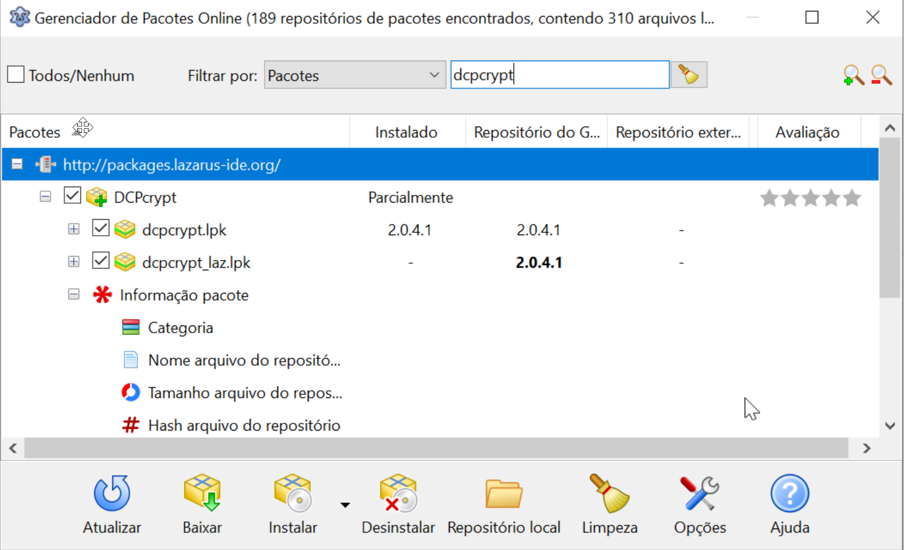

É uma biblioteca que nos permite criptografar dados, mesmo que você ache desnecessário, ela é usada por outras bibliotecas e componentes que provavelmente a usarão quando o assunto for criptografar dados, então recomendo sua instalação.
Vá em ->Gerenciador de Pacotes Online(GPO ou OPM em inglês), então procure por “DCPcrypt” e marque a inteira árvore:

E clique em Instalar|Instalar a partir do repositório. Às vezes lhe será solicitado reiniciar a IDE, responda “sim” e prossiga. Repita a mesma operação para todos os componentes indicados.